TANXING TWIN · USER MANUAL · 2026-10-24
把資料看懂，
再做營運決策。
票證重播新版｜12 章操作說明、數據字典、公式與錄影講稿
開啟網站 ↗ 下載 PDF 下載前版基線 Word 報告（排班附錄為舊版）
此版取代舊版人工旅客生成與固定班表情境的錄影說明。行控重播與班次最佳化截圖更新於2026-10-24；其他章節沿用前版實際畫面。數值以當次日期與參數為準。
來源與品質 → 年度／子線差異 → 票證規則重播 → 需求預測回測 → 限制下重排 → 人工核對
觀測 ≠ 推估 ≠ 預測 ≠ 情境。所有車輛位置均非即時 GPS；沒有候車或延誤實測；排班結果只供候選比較。
01 / 使用說明
第一次使用：先分清四種資料
為內部營運人員解釋網站；先確認資料口徑，再做比較。
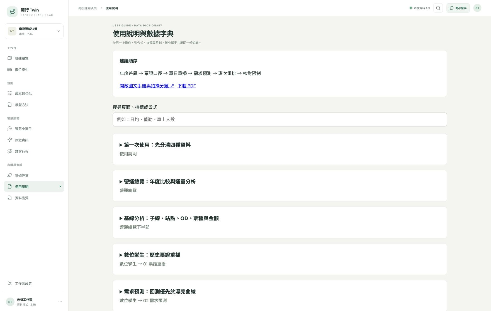
圖 1：使用說明。截圖只展示當時可見區域，完整操作請依下列步驟。操作步驟
- 開啟網站，首頁是營運總覽。先確認基準年與比較年；首頁年度重點為全部子線。
- 從年度比較進入數位孿生；先選重播日期，再按時間定位。
- 需要解釋時，開啟智慧小幫手，問出頁名、指標與年份。
- 使用說明提供完整手冊；模型方法提供公式及功能入口。
數據、公式與單位
- 歷史觀測：2024、2025 年 6670 電子票證聚合。單位通常是交易筆數。
- 規則推估：車次切分、在車量、位置內插、值勤片段。
- 模型估計：需求預測及未校準的參考帶。
- 情境假設：容量、成本、休息門檻、成長率、併班容忍時間與低碳係數。
解讀限制
- 歷史票證只有 6670 系列與 A/B/D/E/F/H 子線；沒有全南投公車票證資料。
- 沒有真實即時 GPS、ETA、候車人數或拒載觀測。
為什麼這樣做
先辨識資料層次，可避免把票證推估當成完整營運實況，或把候選方案當成已執行成果。
依據：src/data/ticket-aggregates.json；scenario-lab/data/replay-all.json可直接念的旁白
歡迎使用潭行 Twin。我們把歷史票證、3D 重播和班次規劃放在同一套工具。畫面上的資訊分成觀測、推估、預測和情境四種；看懂這個差別，才能正確解讀後續數據。
02 / 營運總覽
營運總覽：年度比較與運量分析
比較兩年交易規模、季節分布與子線差異。原運量分析已併入本頁。
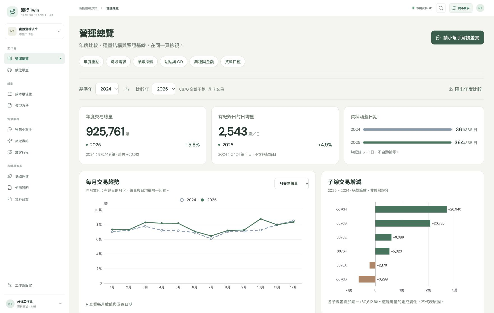
圖 2：營運總覽。截圖只展示當時可見區域，完整操作請依下列步驟。操作步驟
- 選基準年 2024、比較年 2025；年度重點以全部子線比較。
- 閱讀總量、日均量、涵蓋日數與缺日；再查看月份、星期、時段圖。
- 按「單線探索」並選子線，查看該區月份與時段差異；這個選單只影響本區。
- 往下看站點、OD、票種與金額；可按圖旁問小幫手，或匯出年度比較。
數據、公式與單位
- 總交易量 T = 所選年度各日交易筆數加總；子線總量用子線彙總。
- 差額 Δ = 比較年 T − 基準年 T；增減率 = Δ / 基準年 T × 100%。基期為零則不計百分比。
- 日均 = 全子線 T / 有紀錄日數；2024 有 361 日、2025 有 364 日。完整日曆分別 366、365 日，無紀錄 5、1 日。
- 共同月日配對：只比較兩年都有紀錄的同月日，排除 2 月 29 日；尚未控制星期及假日不同。
- 時段占比 = 該小時交易 / 所選全年交易；星期日均 = 該星期交易總和 / 有紀錄的該星期日期數。
- 首頁月份、星期與日均維持全部子線；下方單線探索的月份來自獨立 route_month 摘要。少於10筆的月份不顯示但仍計入年度總量。助理子線查詢缺逐日資料時不提供日均。
解讀限制
- 交易不是獨立旅客，也不含完整現金、套票或未搭上車的人。
- 無紀錄日不可補零或推斷停駛；年度增減不是政策或調度效果的因果證據。
為什麼這樣做
總量反映規模，日均降低涵蓋天數不同的干擾；時段占比可觀察結構變動，避免只有大數字比較。
依據：src/annualComparison.ts；src/data/ticket-aggregates.json；src/components/AnnualComparison.tsx可直接念的旁白
首頁先比較兩年的總量，也比較日均量。因為兩年的資料涵蓋天數不同，只看總量容易誤判。往下的月份與時段圖，則幫助我們找到差異發生在哪裡；這些是觀察到的差異，還不能直接解釋原因。
03 / 營運總覽下半部
基線分析：子線、站點、OD、票種與金額
從總量差異往下找到具體交易結構。
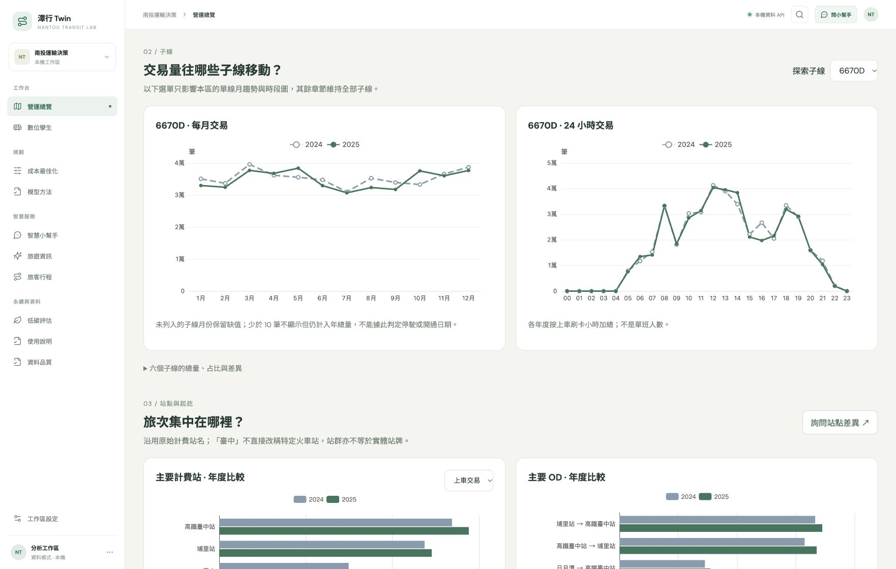
圖 3：營運總覽下半部。截圖只展示當時可見區域，完整操作請依下列步驟。操作步驟
- 查看六個子線的年度量與占比。選定子線比較月份與每小時交易。
- 切換站點的上車／下車排行；展開 OD 摘要。
- 切換票種的交易量／實扣金額，閱讀圖旁的定義。
數據、公式與單位
- 子線占比 = 子線筆數 / 該年全部原始筆數。
- 計費站是票證記錄欄位，不一定是一個精確站牌；臺中計費站不可直接命名為特定火車站。
- OD = 上車計費站 → 下車計費站；目前摘要只有各年前十大，圖上可再只呈現前幾名。未列入不等於零。
- 票種依文字關鍵字分組；定期類不代表已核實的特定身分或 TPASS 使用者。
- 實扣 = 交易實扣欄位加總；原始票價、實扣與優惠額度不可相加成營收，優惠額度不代表已核付補貼。
- 交易時間差 = 下車記錄時間 − 上車記錄時間；不是官方行車時間或誤點。
解讀限制
- 基線原始交易尚未去重，與有時間清理的重播資料可能不同。
- 不能用前十大 OD 做全網完整流量矩陣；不能把票種當作乘客身分。
為什麼這樣做
可追查哪些子線、計費區或票種構成差異，同時保留原始欄位的解讀邊界。
依據：src/data/baseline-dashboard.json；src/components/BaselineDetails.tsx；scripts/export_baseline_dashboard.py可直接念的旁白
接著看交易結構。這裡的站點其實是計費站，OD 是計費站之間的交易。實扣是刷卡扣款，不能直接叫做業者營收；同樣，定期票關鍵字也不能直接證明是哪一種補助方案。
04 / 數位孿生 → 01 行控重播
數位孿生：行控重播與方案演練
把事件、地圖、班次與甘特圖放進同一個時間軸，閱讀歷史與候選方案的差異。
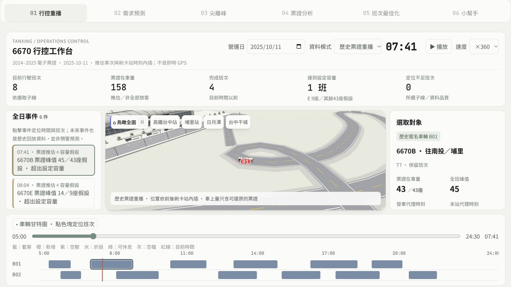
圖 4：數位孿生 → 01 行控重播。截圖只展示當時可見區域，完整操作請依下列步驟。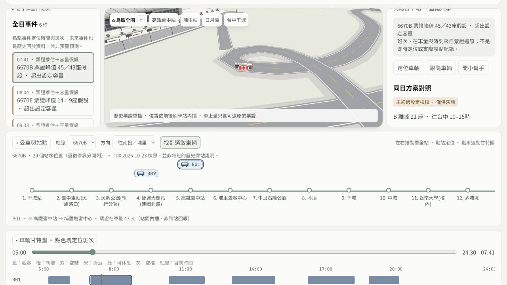
公車與站點：左右捲動查看站序，點車選取，點站定位。圖示位置為內插。操作步驟
- 選擇營運日與「歷史票證重播」。預設暫停，先看資料模式與時間，再播放或拖曳底部時間軸。
- 左側選子線，點全日事件，畫面會暫停、定位到該分鐘，並選取相應班次；全日條件沒有單一時間或車輛。
- 點下方甘特圖色塊或地圖車輛，右側看該班在車量、峰值與起訖時間。按「定位車輛」或「跟隨車輛」，鳥瞰全圖回總覽。
- 地圖下方「公車與站點」可選子線、方向並左右捲動。點公車同步選取地圖與甘特圖；點站名定位地圖；「找到選取車輛」把站線圖捲到該車。可收合站線圖。
- 前往05選B車型、A加班／調時或H+0／1／2，按「在行控地圖預覽此方案」。候選即使未通過檢核也可演練，但不表示可正式採用。
- 在上方切換歷史、固定車次重排、子線方案；勾選歷史影像，把灰色基準與方案疊在同一時刻看。橙色為新增、虛線為調時。
- 右側比較成本差與全日全網未安排需求；成本差只對固定重排計算。點「問小幫手」會帶目前日期、模式與選取對象。
數據、公式與單位
- 重播涵蓋 725 日：2024 年 35,005 段、2025 年 37,520 段推估車次。
- 資料處理：排除旅行時間 ≤0 或 >240 分鐘的記錄，再依日期、匿名車輛、方向切分。
- 切車次規則包含前趟已知下車結束後再隔 30 分鐘，或上車間隔超過 3 小時；另合併少量重疊片段。規則不是官方 Trip ID。
- 在車量 L(s) = L(s−1) + 上車 B(s) − 下車 A(s)。負值保留為品質問題。
- 每站時間是聚合事件時間，站間位置沿路徑內插；車頭方向由路徑方向取得，不是 GPS。
- 載客比 = 推估在車量 / 假設容量。班次重排預設容量 43 人，並非每一子線實際核定容量。
- 官網班表配對為時間容許差內的參考匹配，目前容許差 10 分鐘；未配到的原因仍未知。
- 行控目前行駛＝所選子線工作鏈在 dep≤t<arr 的班次；完成班次＝arr≤t。歷史在車量讀ev.load，方案讀OD配置後的loads，不能複製模板旅客。
- 歷史容量檢視採E9座、其他43座假設；方案讀05的指定cap（本版基準全網43座，B候選可21座）。不同模式的容量假設需一起看。
- 方案相對成本＝選取候選成本−固定車次重排成本；未安排為全日全網，不隨播放分鐘變動。
- Bxx是當日匿名歷史車輛，Vxx是模型工作鏈，不能認定為相同實車。事件有分數分鐘時，跳至向上取整的分鐘；時間軸範圍05:00–24:30。
- 站線圖與3D地圖共用時鐘、路徑及位置內插。前站／次站為線形位置推估，不是即時到站回報；方案使用調整後站時刻，不複製歷史時刻。站距為等距示意，不代表實際距離。
解讀限制
- 零刷卡班次可能完全不可見；現金旅客不在推估中。
- 地形與車輛是示意；部分 A/E 路形借用、F 有延伸近似，不是完整路線實測。
- B／D／H 站線圖列出 TDX 2026-10-23 快照的 29／46／16 個站序位置，D 重複停靠分開列；回程以去程站序反轉示意，未獨立驗證回程站序。A／E／F 僅列計費區示意，不是完整站點。歷史當年停站、候車與實際延誤仍未知。
- 全日事件包含未來時間點的歷史紀錄，不是預測預警。
- 空駛只有估計時段、端點與距離，甘特圖會顯示，但地圖不虛構空駛路徑；尚未出發／已完成的方案車不畫移動動畫。
- 灰色歷史影像不加進方案指標。未安排不是實際拒載；方案成本不是實證節省。
為什麼這樣做
行控工作台把「發現事件 → 找到車次 → 查看位置 → 檢查排班 → 比較方案」接在一起，減少跨頁找資料。共用時鐘及05計算結果，避免地圖動畫與報表各算一套。
依據：scenario-lab/scripts/tripsplit.py；scenario-lab/scripts/build_replay.py；scenario-lab/src/d_replay.js；scenario-lab/data/route-6670.json；scenario-lab/control-model.js；scenario-lab/src/j_control_center.js；scenario-lab/SPEC_CONTROL_CENTER.md；scenario-lab/station-model.js；scenario-lab/src/k_station_strip.js可直接念的旁白
這一版把數位孿生變成行控工作台。先選一天，在左邊點一個事件，地圖、時間和下方甘特圖會一起定位。接著進入05選H加兩班，再按預覽方案，橙色就是新增班次。右側同時保留成本與未安排需求；如果沒有改善，系統也會如實顯示。這是票證重播與方案演練，不是即時GPS或正式派車。 地圖下方也恢復公車與站點。先選子線和方向，點公車就能看它大約行經哪兩站；左右捲動看其餘站點。B、D、H有快照站序，其他子線只顯示計費區示意。
05 / 數位孿生 → 02 需求預測
需求預測：回測優先於漂亮曲線
估計日期與方向的票證需求，並以歷史回測檢查預測價值。
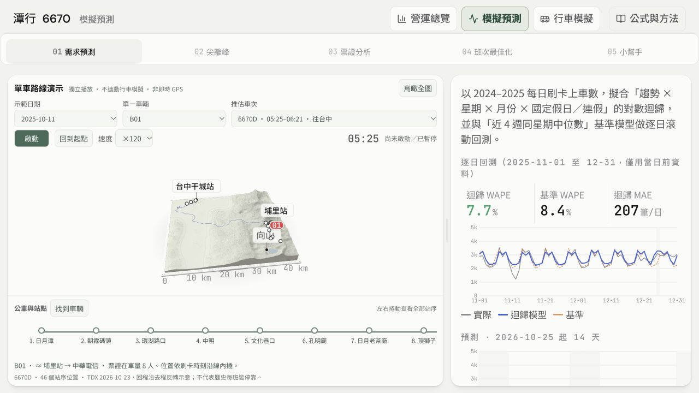
圖 5：數位孿生 → 02 需求預測。截圖只展示當時可見區域，完整操作請依下列步驟。操作步驟
- 切到需求預測，查看從瀏覽器當日的明天起算14天的去程與回程；目前沒有獨立預測日期選單。
- 先閱讀模型與基線的 MAE、WAPE 和有效回測天數，再看預測曲線。
- 查看影響因子與參考帶；歷史日期曲線與回測的含義不同。
數據、公式與單位
- 3D 模型：log(1+y) = 趨勢 + 星期 + 月份 + 假日／連假／春節特徵。嶺迴歸 λ=0.3，截距不懲罰。
- 先擬合，再依殘差 MAD 的 3.5 倍門檻排除異常並重擬合；不是把真實異常需求直接否定。
- 回測從 2025-11-01 起，逐日只用該日以前資料訓練，與近四週同星期中位數比較；基線至少兩筆歷史。共同有效日期才計誤差。
- MAE = Σ|實際−預測| / 有效筆數；WAPE = Σ|實際−預測| / Σ實際 ×100%。分母為零不可解讀。
- 畫面預測日與重播日分開；前者從明天起算，後者是選定歷史營運日。顯示日期的模型使用全資料擬合；若以程式查歷史日期，屬擬合，不是當時真的預測。
- 參考帶 = exp(μ ± 1.2816σ) −1 並下限截零；未校準，不能宣稱有經驗驗證的 80% 覆蓋率。
- 主網站／一般助理的近四週同星期中位數基線與 3D 迴歸模型是不同模型。
解讀限制
- 預測的是票證觀測需求，不是完整乘客需求。
- 假日表是內建資料；跨到未維護年份前要更新，不可無限制外推。
- 參考帶不包含所有突發事件或政策變動。
為什麼這樣做
用簡單基線和時間序列回測做對照，才知道複雜模型是否帶來改善；可避免偷看未來資料產生過度樂觀結果。
依據：scenario-lab/src/e_forecast.js；src/domain.ts；scenario-lab/data/ops-aggregates.json可直接念的旁白
預測頁不只看曲線。我們用逐日回測，比較模型與四週同星期中位數。MAE 代表平均差多少筆，WAPE 是總絕對誤差相對於總實際量。陰影只是未校準的參考範圍，不是準確率保證。
06 / 數位孿生 → 03 尖離峰
尖離峰：看時間分布與服務缺口線索
找出不同方向與日型的需求集中時段。
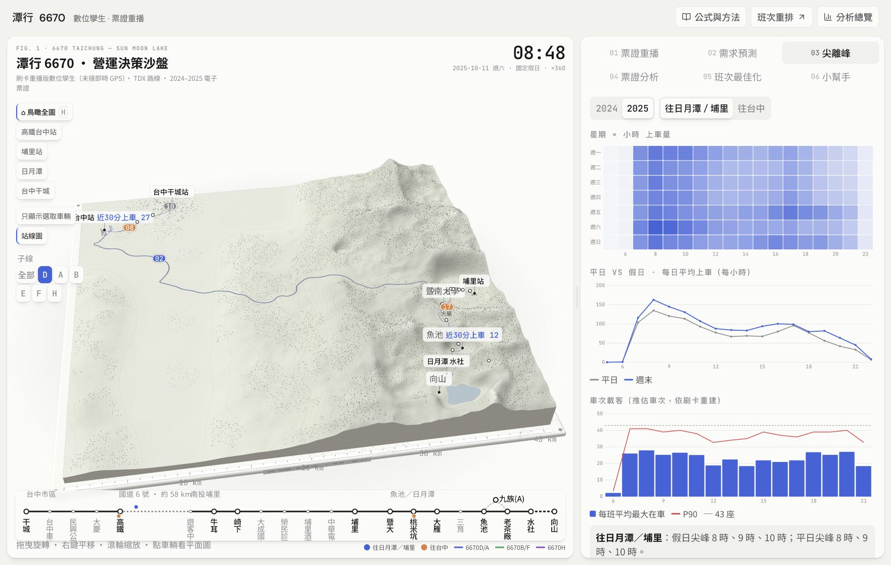
圖 6：數位孿生 → 03 尖離峰。截圖只展示當時可見區域，完整操作請依下列步驟。操作步驟
- 查看平日／假日與方向的時段曲線及熱圖。
- 比較高峰與低谷，不把單一尖峰直接當成需要加班。
- 交叉看班次峰值、班距統計與重播片段，再進入重排測試。
數據、公式與單位
- 小時交易量由票證上車時段聚合；日型分母依有紀錄日期。
- 時段占比 = 時段量 / 同範圍總量。
- 推估班距 = 相鄰可觀察車次的時間差；不是官方完整發車間隔。
- 班次最佳化全年檢核另顯示推估等待：E[h²]/(2E[h])；前提是隨機到站、足夠容量與班次可觀察，不能視為實際旅客等待。
解讀限制
- 尖峰交易多不等於一定超載，離峰交易少也不等於可以取消基本服務。
- 空白熱格或樣本不足不代表沒有服務。
為什麼這樣做
時間分布可協助定位供需錯配，但需搭配班次容量及路段資料，避免只憑總量調班。
依據：scenario-lab/data/ops-aggregates.json；scenario-lab/data/driver-headway-compact.json；scenario-lab/src/g_ui.js可直接念的旁白
尖離峰頁讓我們看到需求集中在哪些時段。接著還要看同時有幾班車、哪些路段最擠。低需求並不代表可以直接取消班次，因為基本服務與乘客可接受時間也要納入。
07 / 數位孿生 → 04 票證分析
票證分析：群體行為與 OD
分析聚合的搭乘區間與使用行為。
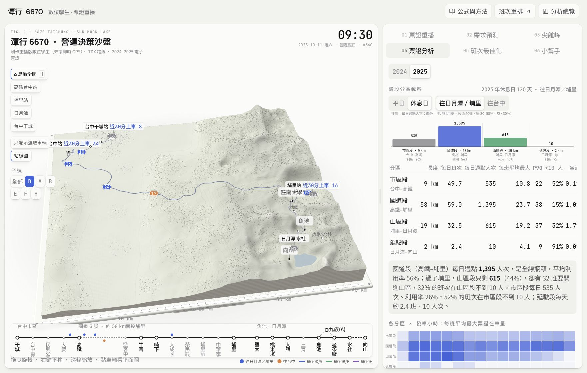
圖 7：數位孿生 → 04 票證分析。截圖只展示當時可見區域，完整操作請依下列步驟。操作步驟
- 在3D票證分析選年份，查看分區路段載客、平／休息日與方向，再看 OD、站點、票種與推估在車分布。
- 查看3D的同日兩筆停留摘要；卡片頻次與較寬的同日回程間隔在營運總覽底部「延伸分析」中。
- 將看到的現象當作需要業者核對的線索，而非個人行程。
數據、公式與單位
- 3D路段分區：市區、國道、山區、延駛段；過點人次是各班經過代表點的推估在車量加總，最大在車是每班該分區各小段的最大值。這些不是唯一乘客數。
- 3D分區坐滿率 = 達容量假設的推估車次 / 分區車次；此圖大客車用43座、E線用9座假設，但重排器仍統一43人，兩處口徑不可混用。
- 3D停留時間另採同卡同日恰好兩筆、台中／高鐵往某區再返回的篩選；停留 = 回程上車時間 − 去程下車時間，不等同主網站較寬的反向OD配對。
- 3D OD矩陣與上下車圖來自 ops-aggregates；首頁的前十大 OD 摘要是另一份資料，顯示範圍不同。
- 車次最大在車分布：逐班沿站序累加上下車，取每班最大值後分箱；不能直接稱為實測滿載率。
- 卡片頻次 = 同一匿名卡片在資料期內的交易次數，再彙總成區間。卡片不是已辨識的個人。
- 同日回程間隔：依同卡、同日、反向 OD 規則配對的交易時間差，屬停留行為代理。
- 旅行鏈為規則串接交易；不代表已確認活動目的、住址或完整旅遊路線。
- 低樣本可能被抑制，未顯示不等於零。
解讀限制
- 不能推斷某位旅客身分或動機。
- 跨日、現金、未配對交易會造成不完整鏈結。
為什麼這樣做
聚合分析能看見群體模式，又避免在公開網站顯示逐筆卡號或個人旅程。
依據：src/data/ticket-aggregates.json；scenario-lab/data/travel-chain.json；scenario-lab/scripts/travel_chain.py可直接念的旁白
票證分析描述的是群體行為。例如同日反向 OD 可以作為回程線索，但不代表我們知道旅客去哪裡玩，也不能把卡片數當成獨立人數。
08 / 數位孿生 → 05 班次最佳化
班次最佳化：同一需求的三欄比較
以歷史票證基準、固定車次重排、子線調度方案比較同一天的成本與服務取捨。
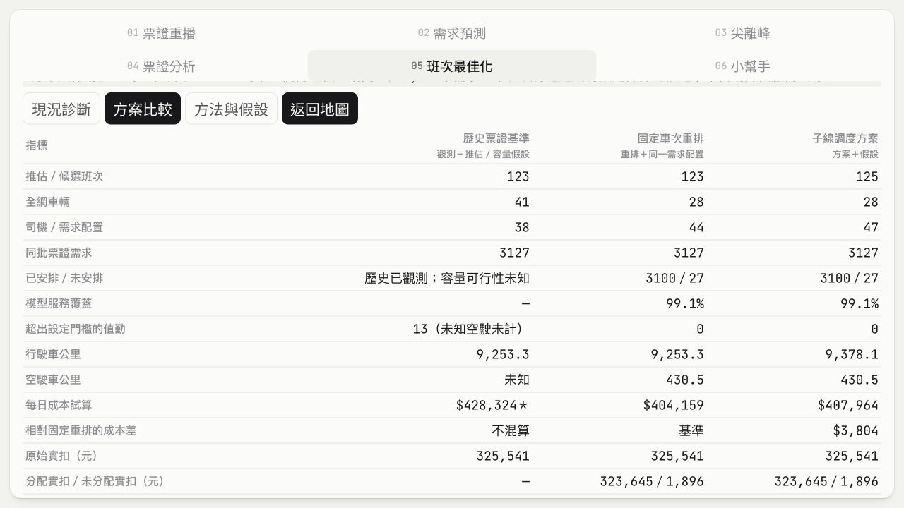
圖 8：數位孿生 → 05 班次最佳化。截圖只展示當時可見區域，完整操作請依下列步驟。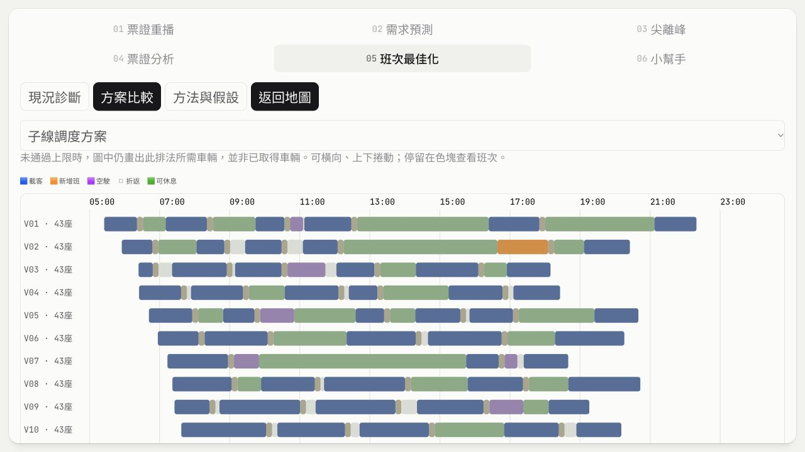
2025-10-11，H往台中+2班；橘色為新增班，完整條件見下方。操作步驟
- 選2025-10-11作示範營運日；先讀現況診斷，再進方案比較。
- 選B離峰43／21座、A容量壓力加班／調時、H指定方向+0／1／2班；方向只控制情境作用範圍，三欄仍比較全網。
- 先看已安排／未安排與檢核結果，再比較方案相對固定重排的成本。預設100%服務底線，不自動放寬。 展開未安排OD明細可核對子線、原上車時段、計費站與原因。
- 捲到車輛甘特圖，切換固定重排／子線方案；每列一台車，停留色塊可看載客、新增班、空駛、折返及可休息時段。
- 到方法與假設調整時窗、改搭分鐘、服務底線、車隊與車型上限、工時門檻；下載本次聚合結果JSON保留參數與來源。
數據、公式與單位
- 模型dispatch-v1-2026-10-24；需求od-time-v1-2026-10-24；清理後票證725日，源檔SHA與當次參數可在方法頁及JSON追溯。
- L(j,s)=L(j,s−1)+上車−下車；P(j)=max L(j,s)。上車總筆數不能直接當成班次峰值。
- 逐OD×時段：已安排＋未安排＝原始觀測需求；分配實扣＋未分配實扣＝原始實扣。內部實扣用整數分，畫面換算元。
- 旅客配置以同路線、方向、涵蓋OD、原班上車計費站時間±窗口、每段容量為條件；選擇少者優先，再選改搭時間差小者，為貪婪配置。
- B只改43／21座，原峰值<10比例不變；改看峰值容量比與未安排。H加班不保證低載改善；A達到43與超過43分開。2025全年A的7.31%與4.69%是票證峰值與43座假設。
- 車型固定在整條車鏈；同車型銜接圖以最大匹配配置車輛，禁止跨線時再分線。dep(j) ≥ arr(i)+折返+空駛代理時間。沒有混合車型全域最優證明。
- 司機按車鏈與端點切值勤，含空駛駕車；折返不算可休息。預設駕車10時、連續4時、休息30分、跨度12時、折返10分，為模型門檻。整備前15／後10分只計薪資。
- 成本＝各車型（營運＋空駛公里）×每公里成本＋司機試算＋車輛每日固定費。方案增量只與固定重排比較；歷史未知空駛未計。
- 預設43座41台、21座8台、9座0台，總車隊上限41台；每公里費率17.8439／12／8元，每日固定費3200／2400／1600元。全為情境設定，9座不參與候選。43座油價快照29.83元/L，來源週2026/10/11–10/17，油耗0.33L/km、保修8元/km。
- 示範2025-10-11往台中、H 14–18時、改搭±30分、P85、上述車隊與工時：固定重排28車／44值勤、未安排27筆；H+2為28車／47值勤、未安排27筆。100%底線下兩者都未通過；不得稱已改善或正式最優。
- 子線參與車輛不可加總；全網車輛與值勤由工作鏈計算。未安排包含資料不相容，不等於實際拒載。
解讀限制
- 車輛數、車型、油耗與成本未獲業者驗證；不是正式調度。
- 模型使用計費站序與聚合事件時間，並非每個實體站、真實旅客到站時間或完整排隊需求；無法配置的OD保留未安排。
- 未安排含資料異常，預設100%可能沒有合格候選；調低底線只是更改假設，不能宣稱改善服務。
- 司機安排為啟發式；不完整涵蓋資格、跨日休息、車庫、充電等條件。「超出設定門檻」不是法律判斷。
- 不做E預約、D分段、F截短、CP-SAT最優證明或即時調度。舊版crew-reference的28車34司機未含空駛駕車，不能與本版數字混用。
- 端點換人假設備勤司機可到位，未計人員接送與首末站進出庫；可行狀態只針對本版列出的條件。
為什麼這樣做
固定同一批需求，將調度資源、服務缺口與成本分開呈現，能直接檢查加班或換小車的代價；甘特圖讓排法可被檢視，守恆避免增加班次時憑空增加乘客與票收。
依據：scenario-lab/dispatch-model.js；scripts/build_demand_od_time.py；scenario-lab/data/demand-od-time.json；scenario-lab/data/vehicle-types.json；scenario-lab/data/scenario-spec.json；scenario-lab/SPEC_DISPATCH.md可直接念的旁白
這頁把同一天、同一批需求分成三欄。先看歷史，再看固定班次重排，最後測試換小車或加班。請先看未安排需求及檢核結果，再看成本差。往下的甘特圖可以核對哪台車接哪些班。換小車不會自動減少低載，加班也不保證更省錢；我們要呈現的是代價與取捨。
09 / 成本最佳化
成本最佳化：獨立的合成候選示範
展示在有限候選集合中求最低營運成本。
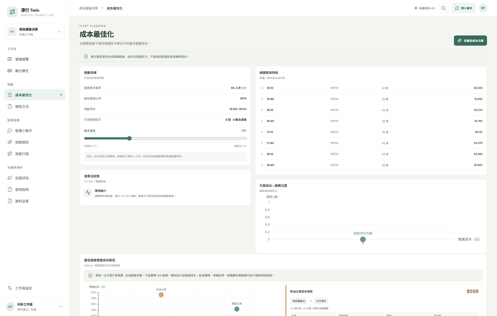
圖 9：成本最佳化。截圖只展示當時可見區域，完整操作請依下列步驟。操作步驟
- 由側欄進入成本最佳化，調整需求與最低服務比例。
- 查看候選班次、被選中的班次、未服務量及求解狀態。
- 若不可行，先檢查候選總容量與車輛衝突，再調整條件。
數據、公式與單位
- 決策 xᵢ∈{0,1}；目標 min Σ成本 cᵢxᵢ。
- 服務容量 Σ容量 qᵢxᵢ ≥ ceil(需求D × 最低服務比例α)。
- 同車候選若周轉間隔不足，不得同時選取；情境使用120分鐘。
- 目前八個合成候選，最多 2⁸=256 種組合；前端全枚舉可求該集合精確最優，後端可回傳求解器結果。
- 需求基數由所選歷史15–18時比例乘320並設下限，再施加成長率；不是業者實際需求預測。
解讀限制
- 不是3D當日車次重排，兩頁結果不可互稱。
- 候選容量、成本及需求基數為合成假設；最優只限此候選集合。
為什麼這樣做
小集合的精確求解有助於示範目標與限制如何決定方案，並提供可核對的基準。
依據：src/domain.ts；api/fleet_optimizer.py；hosting/lib/operations-assistant.ts可直接念的旁白
成本頁是另一個教學情境。它在八個合成候選班次中，找出滿足服務比例的最低成本組合。這裡可以說候選集合內最優，但不能說已找到南投客運真正的最低成本班表。
10 / 智慧小幫手／數位孿生 → 06 小幫手
智慧小幫手：導覽、指標解釋與營運問答
第一次使用者可問操作，熟悉後可問來源、公式、差異與情境。
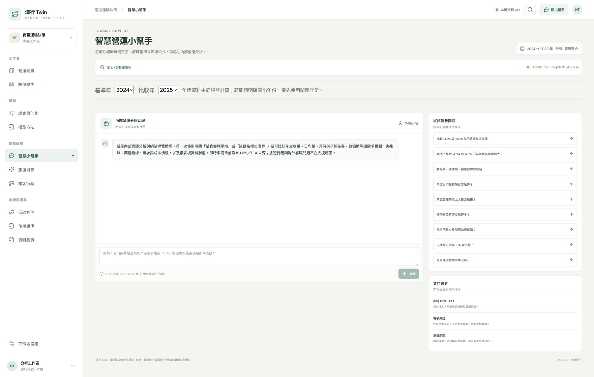
圖 10：智慧小幫手／數位孿生 → 06 小幫手。截圖只展示當時可見區域，完整操作請依下列步驟。操作步驟
- 先問「我是第一次使用，請帶我導覽網站」。
- 指定頁面與指標，例如「營運總覽日均量怎麼算，缺日怎麼處理？」。
- 3D內問「目前重播日重排要幾台車？」可附當次重播快照；一般助理沒有該3D快照。
- 中文候選字確認時按Enter不送出；完成選字後再按Enter送出。Shift+Enter換行，也可按送出按鈕。
- 閱讀答案的來源與限制；遇到缺資料可請它指出應補的資料。
數據、公式與單位
- 公開版由 OpenRouter DeepSeek 模型理解問題，呼叫受控工具取得伺服器聚合、網站說明及有界限的數值快照。
- 數值由資料與程式計算，LLM負責解釋；它不能執行任意程式、讀取本機任意檔案或發出調度命令。
- 網站導覽採維護中的數據字典；資料裡的文字不是系統指令。
- 一般助理年度篩選與3D重播日期是不同上下文；若沒說清楚，回答應指出使用範圍。
- 目前以單次問題回答，不保留跨輪語意記憶；追問請重述頁面、指標或年份。
解讀限制
- 可解釋旅遊資訊、旅客行程及低碳頁的功能與假設，但不提供對外旅遊客服、訂位或個人行程推薦。
- 無法取得的即時值會回報未知；3D連線失敗會明示本機規則回覆，不能當成LLM成功。
- AI仍可能解釋錯誤，重要調度決策需回到圖表與業者原始資料核對。
為什麼這樣做
讓新手在操作中理解數據，並讓熟悉使用者快速取得有來源的答案；統一口徑可降低誤解。
依據：hosting/lib/operations-assistant.ts；api/assistant.py；shared/site-guide.json；scenario-lab/src/h_host.js可直接念的旁白
小幫手現在也能當操作導覽。問它一個指標，答案應說清楚在哪裡看、資料怎麼來、如何計算和有哪些限制。3D裡的助理還能讀取當次重播快照，但它不會真的執行調度。
11 / 模型方法／旅遊資訊／旅客行程／低碳評估／資料品質
其餘頁面：方法、旅遊、旅客行程、低碳、品質
辨識輔助功能的定位，不把示範資料當作即時正式服務。
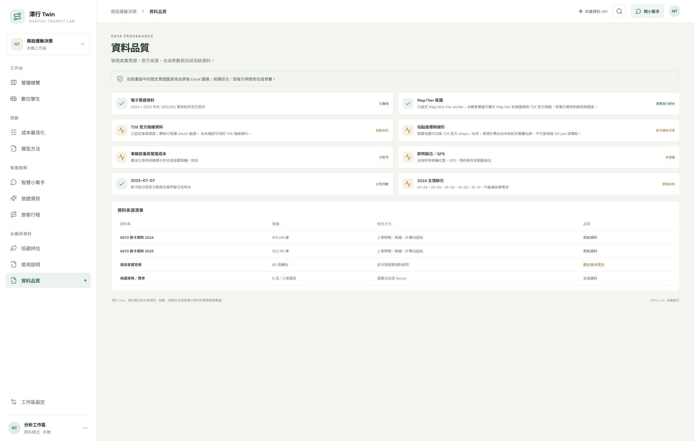
圖 11：模型方法／旅遊資訊／旅客行程／低碳評估／資料品質。截圖只展示當時可見區域，完整操作請依下列步驟。操作步驟
- 模型方法：先閱讀流程、公式與限制，再按功能入口前往操作。
- 旅遊資訊：查看整理的南投客運及觀光連結、公開班表快照；需要出行仍回原站核實。
- 旅客行程：調整出發時間、最晚抵達與轉乘條件，觀察合成時刻圖的最低票價路徑。
- 低碳評估：調整車公里與係數，觀察柴油／電動排放差額。
- 資料品質：查看來源、更新時間、串接狀態與限制；API設定成功不等於已接入GPS。
數據、公式與單位
- 旅客路徑搜尋：有限時刻圖的標籤搜尋；票價優先，抵達時間作平手判定；需滿足出發、轉乘、最晚抵達與轉乘次數限制。搜尋預算用盡不能宣稱最優。
- 旅客行程目前使用合成fixture，非全臺真實路網或可購買票價。
- 柴油排放 = 車公里 / km每公升 × 2.65 kgCO2e每公升；也可用每公里排放情境覆寫。
- 電動排放 = 車公里 / km每kWh × 電力排放係數；減排 = 柴油−電動。係數需標年份與情境，非正式盤查。
- 預設函式參數：柴油2.26 km/L、電動0.7 km/kWh、電力0.467 kgCO2e/kWh；畫面可調值才是當次計算輸入，不自動代表最新年度官方值。
- 3D品質檢查示例：2025鄰接推估車次重疊178/25,742，負在車量29段；異常提醒不是法律裁定。
解讀限制
- 網站導覽可說明所有頁面，並不擴大助理為一般旅遊客服。
- 碳排情境沒有完整生命週期、發電時段或實測油耗，不能當作碳權或正式減碳成果。
為什麼這樣做
保留方法與資料透明度；附加功能可展示未來整合方向，同時讓使用者知道可依賴到什麼程度。
依據：src/components/ModelMethodology.tsx；src/components/TourismGuide.tsx；src/domain.ts；scenario-lab/data/check.log可直接念的旁白
其他頁面提供方法、公開資訊和延伸情境。旅客路徑目前是合成時刻圖，低碳也是係數試算。資料品質頁則是每次解讀數字前應回頭核對的地方。
12 / 使用說明
拍攝流程與故障排除
以約8分鐘示範主要任務，避免把不確定內容錄成確定宣稱。
圖 12：使用說明。截圖只展示當時可見區域，完整操作請依下列步驟。操作步驟
- 錄影前用桌面寬畫面，關閉無關分頁與通知，確認年份、子線、重播日期；不顯示金鑰或原始票證。
- 依順序錄：首頁年度 → 基線 → 3D重播 → 預測 → 尖離峰與票證 → 最佳化 → 助理 → 方法與品質。
- 每次調參後停留數秒，讀出變更條件，再比較結果；先暫停重播以免數字持續變動。
- 助理問答可先準備問題，但錄影時保留實際等待；不要把本機規則回覆剪成LLM成功。
- 最後提醒資料限制與下一步需要業者驗證的資料。
數據、公式與單位
- 畫面不動：先確認暫停狀態、日期及時間，定位12:00、鳥瞰全圖、取消只顯示選取車。
- 兩圖數字不同：比對年份、子線、資料清理口徑、原始交易或推估車次、全日或當前時間。
- 模型不可行：檢查容量、候選班次、周轉與服務底線。不要把不可行改標成最優。
- 小幫手拒答：明確加上本站頁名與指標；查不到值時改問來源與限制。
- AI失敗：稍後重試並查看資料品質；3D規則降級只支援有限問題。
解讀限制
- 舊版影片中的人工旅客生成、固定30分鐘發車與套用3D班表，已不適用目前票證重播版。
- 目前沒有成片；本包提供手冊、講稿、分鏡與截圖，成片後再上首頁。
為什麼這樣做
用一條清楚的營運決策流程串起畫面，比逐一介紹所有按鈕更容易讓觀眾理解價值。
依據：docs/guide；scenario-lab/SPEC_REPLAY.md可直接念的旁白
最後整理重點：先看資料品質，再分析差異；用重播理解現象，用預測和重排產生候選，再交由營運人員核對。潭行 Twin 是決策輔助工具，所有改善都應保留資料來源與假設。
VIDEO STORYBOARD
8 分鐘拍攝時間軸
每段40秒，約15–30秒旁白，其餘留給操作與讀圖。可依語速調整。
| 時間 | 畫面與操作 | 旁白 |
|---|
| 00:00–00:40 | 使用說明
開啟網站，首頁是營運總覽。先確認基準年與比較年；首頁年度重點為全部子線。 | 歡迎使用潭行 Twin。我們把歷史票證、3D 重播和班次規劃放在同一套工具。畫面上的資訊分成觀測、推估、預測和情境四種；看懂這個差別，才能正確解讀後續數據。 |
| 00:40–01:20 | 營運總覽
選基準年 2024、比較年 2025；年度重點以全部子線比較。 | 首頁先比較兩年的總量，也比較日均量。因為兩年的資料涵蓋天數不同，只看總量容易誤判。往下的月份與時段圖，則幫助我們找到差異發生在哪裡；這些是觀察到的差異，還不能直接解釋原因。 |
| 01:20–02:00 | 營運總覽下半部
查看六個子線的年度量與占比。選定子線比較月份與每小時交易。 | 接著看交易結構。這裡的站點其實是計費站，OD 是計費站之間的交易。實扣是刷卡扣款，不能直接叫做業者營收；同樣，定期票關鍵字也不能直接證明是哪一種補助方案。 |
| 02:00–02:40 | 數位孿生 → 01 行控重播
選擇營運日與「歷史票證重播」。預設暫停，先看資料模式與時間，再播放或拖曳底部時間軸。 | 這一版把數位孿生變成行控工作台。先選一天，在左邊點一個事件，地圖、時間和下方甘特圖會一起定位。接著進入05選H加兩班，再按預覽方案，橙色就是新增班次。右側同時保留成本與未安排需求；如果沒有改善，系統也會如實顯示。這是票證重播與方案演練，不是即時GPS或正式派車。 地圖下方也恢復公車與站點。先選子線和方向，點公車就能看它大約行經哪兩站；左右捲動看其餘站點。B、D、H有快照站序，其他子線只顯示計費區示意。 |
| 02:40–03:20 | 數位孿生 → 02 需求預測
切到需求預測，查看從瀏覽器當日的明天起算14天的去程與回程；目前沒有獨立預測日期選單。 | 預測頁不只看曲線。我們用逐日回測，比較模型與四週同星期中位數。MAE 代表平均差多少筆，WAPE 是總絕對誤差相對於總實際量。陰影只是未校準的參考範圍，不是準確率保證。 |
| 03:20–04:00 | 數位孿生 → 03 尖離峰
查看平日／假日與方向的時段曲線及熱圖。 | 尖離峰頁讓我們看到需求集中在哪些時段。接著還要看同時有幾班車、哪些路段最擠。低需求並不代表可以直接取消班次，因為基本服務與乘客可接受時間也要納入。 |
| 04:00–04:40 | 數位孿生 → 04 票證分析
在3D票證分析選年份，查看分區路段載客、平／休息日與方向，再看 OD、站點、票種與推估在車分布。 | 票證分析描述的是群體行為。例如同日反向 OD 可以作為回程線索，但不代表我們知道旅客去哪裡玩，也不能把卡片數當成獨立人數。 |
| 04:40–05:20 | 數位孿生 → 05 班次最佳化
選2025-10-11作示範營運日；先讀現況診斷，再進方案比較。 | 這頁把同一天、同一批需求分成三欄。先看歷史，再看固定班次重排，最後測試換小車或加班。請先看未安排需求及檢核結果，再看成本差。往下的甘特圖可以核對哪台車接哪些班。換小車不會自動減少低載，加班也不保證更省錢；我們要呈現的是代價與取捨。 |
| 05:20–06:00 | 成本最佳化
由側欄進入成本最佳化，調整需求與最低服務比例。 | 成本頁是另一個教學情境。它在八個合成候選班次中，找出滿足服務比例的最低成本組合。這裡可以說候選集合內最優，但不能說已找到南投客運真正的最低成本班表。 |
| 06:00–06:40 | 智慧小幫手／數位孿生 → 06 小幫手
先問「我是第一次使用，請帶我導覽網站」。 | 小幫手現在也能當操作導覽。問它一個指標，答案應說清楚在哪裡看、資料怎麼來、如何計算和有哪些限制。3D裡的助理還能讀取當次重播快照，但它不會真的執行調度。 |
| 06:40–07:20 | 模型方法／旅遊資訊／旅客行程／低碳評估／資料品質
模型方法：先閱讀流程、公式與限制，再按功能入口前往操作。 | 其他頁面提供方法、公開資訊和延伸情境。旅客路徑目前是合成時刻圖，低碳也是係數試算。資料品質頁則是每次解讀數字前應回頭核對的地方。 |
| 07:20–08:00 | 使用說明
錄影前用桌面寬畫面，關閉無關分頁與通知，確認年份、子線、重播日期；不顯示金鑰或原始票證。 | 最後整理重點：先看資料品質，再分析差異；用重播理解現象，用預測和重排產生候選，再交由營運人員核對。潭行 Twin 是決策輔助工具，所有改善都應保留資料來源與假設。 |
字幕檔為段落草稿，請依成片切句與校時。完成影片後，再將成片置入首頁；目前首頁仍為營運總覽。